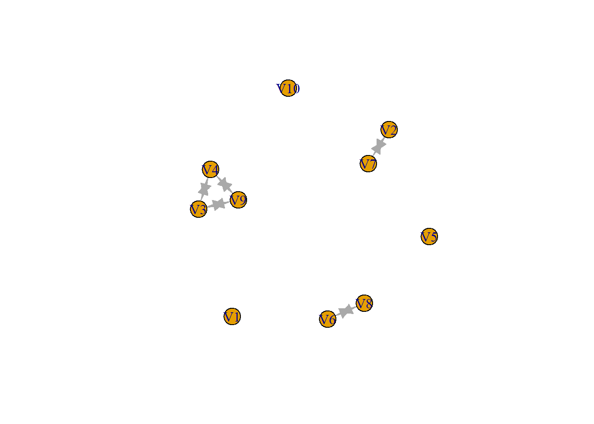

Triads - 4x4
matrix
# install.packages('igraph')
library(igraph)
# install.packages('sna')
library(sna)
# Create a 4x4 matrix filled with 0's
matrix_zeros <- matrix(0, nrow = 4, ncol = 4)
# Add a tie between node 1 and node 3 by placing a 1
matrix_zeros[1, 3] <- 1 # From node 1 to node 3
# Print the matrix
print(matrix_zeros)
#> [,1] [,2] [,3] [,4]
#> [1,] 0 0 1 0
#> [2,] 0 0 0 0
#> [3,] 0 0 0 0
#> [4,] 0 0 0 0
matrix_graph <- graph.adjacency(matrix_zeros)
sna::triad.census(matrix_zeros)
#> 003 012 102 021D 021U 021C 111D 111U 030T 030C 201 120D 120U 120C 210 300
#> [1,] 2 2 0 0 0 0 0 0 0 0 0 0 0 0 0 0
# output shows the count of each of the 16 possible configurations of triads so if below 003 it
# says e.g. 2, that means that the configuration 003 (A,B,C, the empty graph) is possible 2 times
Triad census
output
# 003 A,B,C, the empty graph.
# 012 A->B, C, the graph with a single directed edge.
# 102 A<->B, C, the graph with a mutual connection between two vertices.
# 021D A<-B->C, the out-star.
# 021U A->B<-C, the in-star.
# 021C A->B->C, directed line.
# 111D A<->B<-C.
# 111U A<->B->C.
# 030T A->B<-C, A->C.
# 030C A<-B<-C, A->C.
# 201 A<->B<->C.
# 120D A<-B->C, A<->C.
# 120U A->B<-C, A<->C.
# 120C A->B->C, A<->C.
# 210 A->B<->C, A<->C.
# 300 A<->B<->C, A<->C, the complete graph.
Centrality measures
(practice with a network)
# install.packages('RSiena')
library(RSiena)
# install.packages('igraph') library(igraph) install.packages('sna')
library(sna)
`?`(s501 # Network 1 data: excerpt from 'Teenage Friends and Lifestyle Study' data.
)
dim(s501) # get dimensions of data
#> [1] 50 50
tenxten <- s501[1:10, 1:10] # select a 10 x 10 matrix [rows and columns are divided by comma])
tenxten_graph <- graph.adjacency(tenxten) # make matrixa graph object
plot(tenxten_graph) # make plot of network

sna::triad.census(tenxten)
#> 003 012 102 021D 021U 021C 111D 111U 030T 030C 201 120D 120U 120C 210 300
#> [1,] 82 0 37 0 0 0 0 0 0 0 0 0 0 0 0 1
# Nr. of possible Triad compositions: 10*9*8 / 6 =
# Play around with Centrality Measures
HW: START WRITING INTRO
(UPDATE RESEARCH QUESTIONS)
Try to be specific show that you UNDERSTAND INTER-DEPENDENCIES
MAKE A LIST OF THE TYPE OF DATA YOU WILL NEED Relational attributes,
etc.
Update Lab journal
Also still redo what i missed in class: make centrality measures of
the 10x10 matrix
USEFUL KEYBINDS
ALT + MINUS for the ARROWS <-
STR + SHIFT + M for the %>%
STR + SHIFT + C for making a comment of multiple lines you
highlighted
heading (learning to
take notes with R)
note:
- kjhg
- lkjh
text here \[
N = ß \Sigma lss \sqrt {sd }
\] text again
text here \[
N = 1
\] text again
USING THE
REFERENCES
Open: references.bib
take “bibTex Citation” from online and put it in there
if you want to use it, use @ - symbol and use the word behind the ” {
“
In this example, it would be @”rmarkdown2018” (without the quotation
marks)
@Book{rmarkdown2018, title = {R
Markdown: The Definitive Guide}, author = {Yihui Xie and J.J. Allaire
and Garrett Grolemund}, publisher = {Chapman and Hall/CRC}, address =
{Boca Raton, Florida}, year = {2018}, note = {ISBN 9781138359338}, url =
{https://bookdown.org/yihui/rmarkdown}, }
LS0tDQp0aXRsZTogIldlZWsyIC0gRGVzY3JpcHRpdmVzIg0KYXV0aG9yOiAiVmVyb29vbyINCmRhdGU6ICIyMDI0LTA5LTEwIg0Kb3V0cHV0OiBodG1sX2RvY3VtZW50DQotLS0NCg0KYGBge3IsIGdsb2JhbHNldHRpbmdzLCBlY2hvPUZBTFNFLCB3YXJuaW5nPUZBTFNFLCByZXN1bHRzPSdoaWRlJ30NCmxpYnJhcnkoa25pdHIpDQoNCmtuaXRyOjpvcHRzX2NodW5rJHNldChlY2hvID0gVFJVRSkNCm9wdHNfY2h1bmskc2V0KHRpZHkub3B0cz1saXN0KHdpZHRoLmN1dG9mZj0xMDApLHRpZHk9VFJVRSwgd2FybmluZyA9IEZBTFNFLCBtZXNzYWdlID0gRkFMU0UsY29tbWVudCA9ICIjPiIsIGNhY2hlPVRSVUUsIGNsYXNzLnNvdXJjZT1jKCJ0ZXN0IiksIGNsYXNzLm91dHB1dD1jKCJ0ZXN0MiIpKQ0Kb3B0aW9ucyh3aWR0aCA9IDEwMCkNCnJnbDo6c2V0dXBLbml0cigpDQoNCg0KDQpjb2xvcml6ZSA8LSBmdW5jdGlvbih4LCBjb2xvcikge3NwcmludGYoIjxzcGFuIHN0eWxlPSdjb2xvcjogJXM7Jz4lczwvc3Bhbj4iLCBjb2xvciwgeCkgfQ0KDQpgYGANCg0KYGBge3Iga2xpcHB5LCBlY2hvPUZBTFNFLCBpbmNsdWRlPVRSVUV9DQprbGlwcHk6OmtsaXBweShwb3NpdGlvbiA9IGMoJ3RvcCcsICdyaWdodCcpKQ0KI2tsaXBweTo6a2xpcHB5KGNvbG9yID0gJ2RhcmtyZWQnKQ0KI2tsaXBweTo6a2xpcHB5KHRvb2x0aXBfbWVzc2FnZSA9ICdDbGljayB0byBjb3B5JywgdG9vbHRpcF9zdWNjZXNzID0gJ0RvbmUnKQ0KYGBgDQoNCiMgVHJpYWRzIC0gNHg0IG1hdHJpeA0KDQpgYGB7cn0NCiMgaW5zdGFsbC5wYWNrYWdlcygiaWdyYXBoIikNCmxpYnJhcnkoaWdyYXBoKQ0KI2luc3RhbGwucGFja2FnZXMoInNuYSIpDQpsaWJyYXJ5KHNuYSkNCg0KDQojIENyZWF0ZSBhIDR4NCBtYXRyaXggZmlsbGVkIHdpdGggMCdzDQptYXRyaXhfemVyb3MgPC0gbWF0cml4KDAsIG5yb3cgPSA0LCBuY29sID0gNCkNCg0KIyBBZGQgYSB0aWUgYmV0d2VlbiBub2RlIDEgYW5kIG5vZGUgMyBieSBwbGFjaW5nIGEgMQ0KbWF0cml4X3plcm9zWzEsIDNdIDwtIDEgICMgRnJvbSBub2RlIDEgdG8gbm9kZSAzDQoNCiMgUHJpbnQgdGhlIG1hdHJpeA0KcHJpbnQobWF0cml4X3plcm9zKQ0KDQptYXRyaXhfZ3JhcGggPC0gZ3JhcGguYWRqYWNlbmN5KG1hdHJpeF96ZXJvcykNCnNuYTo6dHJpYWQuY2Vuc3VzKG1hdHJpeF96ZXJvcykNCg0KIyBvdXRwdXQgc2hvd3MgdGhlIGNvdW50IG9mIGVhY2ggb2YgdGhlIDE2IHBvc3NpYmxlIGNvbmZpZ3VyYXRpb25zIG9mIHRyaWFkcyAgDQogICAgIyBzbyBpZiBiZWxvdyAwMDMgaXQgc2F5cyBlLmcuIDIsIHRoYXQgbWVhbnMgdGhhdCB0aGUgY29uZmlndXJhdGlvbiAwMDMgKEEsQixDLCB0aGUgZW1wdHkgZ3JhcGgpIGlzIHBvc3NpYmxlIDIgdGltZXMNCg0KDQpgYGANCg0KIyMgVHJpYWQgY2Vuc3VzIG91dHB1dA0KDQpgYGB7cn0NCg0KIyAwMDMNCiMgQSxCLEMsIHRoZSBlbXB0eSBncmFwaC4NCg0KIyAwMTINCiMgQS0+QiwgQywgdGhlIGdyYXBoIHdpdGggYSBzaW5nbGUgZGlyZWN0ZWQgZWRnZS4NCg0KIyAxMDINCiMgQTwtPkIsIEMsIHRoZSBncmFwaCB3aXRoIGEgbXV0dWFsIGNvbm5lY3Rpb24gYmV0d2VlbiB0d28gdmVydGljZXMuDQoNCiMgMDIxRA0KIyBBPC1CLT5DLCB0aGUgb3V0LXN0YXIuDQoNCiMgMDIxVQ0KIyBBLT5CPC1DLCB0aGUgaW4tc3Rhci4NCg0KIyAwMjFDDQojIEEtPkItPkMsIGRpcmVjdGVkIGxpbmUuDQoNCiMgMTExRA0KIyBBPC0+QjwtQy4NCg0KIyAxMTFVDQojIEE8LT5CLT5DLg0KDQojIDAzMFQNCiMgQS0+QjwtQywgQS0+Qy4NCg0KIyAwMzBDDQojIEE8LUI8LUMsIEEtPkMuDQoNCiMgMjAxDQojIEE8LT5CPC0+Qy4NCg0KIyAxMjBEDQojIEE8LUItPkMsIEE8LT5DLg0KDQojIDEyMFUNCiMgQS0+QjwtQywgQTwtPkMuDQoNCiMgMTIwQw0KIyBBLT5CLT5DLCBBPC0+Qy4NCg0KIyAyMTANCiMgQS0+QjwtPkMsIEE8LT5DLg0KDQojIDMwMA0KIyBBPC0+QjwtPkMsIEE8LT5DLCB0aGUgY29tcGxldGUgZ3JhcGguDQoNCmBgYA0KDQojIENlbnRyYWxpdHkgbWVhc3VyZXMgKHByYWN0aWNlIHdpdGggYSBuZXR3b3JrKQ0KDQpgYGB7cn0NCiMgaW5zdGFsbC5wYWNrYWdlcygiUlNpZW5hIikNCmxpYnJhcnkoUlNpZW5hKQ0KI2luc3RhbGwucGFja2FnZXMoImlncmFwaCIpDQojIGxpYnJhcnkoaWdyYXBoKQ0KI2luc3RhbGwucGFja2FnZXMoInNuYSIpDQpsaWJyYXJ5KHNuYSkNCg0KP3M1MDEgIyBOZXR3b3JrIDEgZGF0YTogZXhjZXJwdCBmcm9tICJUZWVuYWdlIEZyaWVuZHMgYW5kIExpZmVzdHlsZSBTdHVkeSIgZGF0YS4NCmRpbShzNTAxKSAjIGdldCBkaW1lbnNpb25zIG9mIGRhdGENCg0KdGVueHRlbiA8LSBzNTAxWzE6MTAsMToxMF0gIyBzZWxlY3QgYSAxMCB4IDEwIG1hdHJpeCBbcm93cyBhbmQgY29sdW1ucyBhcmUgZGl2aWRlZCBieSBjb21tYV0pDQoNCnRlbnh0ZW5fZ3JhcGggPC0gZ3JhcGguYWRqYWNlbmN5KHRlbnh0ZW4pICMgbWFrZSBtYXRyaXhhIGdyYXBoIG9iamVjdCANCnBsb3QodGVueHRlbl9ncmFwaCkgIyBtYWtlIHBsb3Qgb2YgbmV0d29yayANCg0Kc25hOjp0cmlhZC5jZW5zdXModGVueHRlbikNCg0KDQojIE5yLiBvZiBwb3NzaWJsZSBUcmlhZCBjb21wb3NpdGlvbnM6DQogICMgMTAqOSo4IC8gNiA9IA0KDQoNCiMgUGxheSBhcm91bmQgd2l0aCBDZW50cmFsaXR5IE1lYXN1cmVzIA0KYGBgDQoNCiMgSFc6IFNUQVJUIFdSSVRJTkcgSU5UUk8gKFVQREFURSBSRVNFQVJDSCBRVUVTVElPTlMpDQoNClRyeSB0byBiZSBzcGVjaWZpYyBzaG93IHRoYXQgeW91IFVOREVSU1RBTkQgSU5URVItREVQRU5ERU5DSUVTDQoNCk1BS0UgQSBMSVNUIE9GIFRIRSBUWVBFIE9GIERBVEEgWU9VIFdJTEwgTkVFRCBSZWxhdGlvbmFsIGF0dHJpYnV0ZXMsIGV0Yy4NCg0KVXBkYXRlIExhYiBqb3VybmFsDQoNCkFsc28gc3RpbGwgcmVkbyB3aGF0IGkgbWlzc2VkIGluIGNsYXNzOiBtYWtlIGNlbnRyYWxpdHkgbWVhc3VyZXMgb2YgdGhlIDEweDEwIG1hdHJpeCANCg0KIyBVU0VGVUwgS0VZQklORFMgDQpBTFQgKyBNSU5VUyBmb3IgdGhlIEFSUk9XUyA8LSANCg0KU1RSICsgU0hJRlQgKyBNIGZvciB0aGUgJT4lIA0KDQpTVFIgKyBTSElGVCArIEMgZm9yIG1ha2luZyBhIGNvbW1lbnQgb2YgbXVsdGlwbGUgbGluZXMgeW91IGhpZ2hsaWdodGVkDQoNCiMgaGVhZGluZyAobGVhcm5pbmcgdG8gdGFrZSBub3RlcyB3aXRoIFIpDQoNCm5vdGU6DQoNCjEuICBramhnXA0KMi4gIGxramgNCiAgICAtICAga2poDQogICAgLSAgIGtqaGdmDQoNCnRleHQgaGVyZQ0KJCQNCk4gPSDDnyBcU2lnbWEgbHNzIFxzcXJ0IHtzZCB9DQokJA0KdGV4dCBhZ2Fpbg0KDQoNCnRleHQgaGVyZQ0KJCQNCk4gPSAxIA0KJCQNCnRleHQgYWdhaW4NCg0KDQoNCiMgVVNJTkcgVEhFIFJFRkVSRU5DRVMNCg0KT3BlbjogcmVmZXJlbmNlcy5iaWINCg0KdGFrZSAiYmliVGV4IENpdGF0aW9uIiBmcm9tIG9ubGluZSBhbmQgcHV0IGl0IGluIHRoZXJlDQoNCmlmIHlvdSB3YW50IHRvIHVzZSBpdCwgdXNlIFxAIC0gc3ltYm9sIGFuZCB1c2UgdGhlIHdvcmQgYmVoaW5kIHRoZSAiIHsgIlwNCkluIHRoaXMgZXhhbXBsZSwgaXQgd291bGQgYmUgXEAgInJtYXJrZG93bjIwMTgiICh3aXRob3V0IHRoZSBxdW90YXRpb24gbWFya3MpDQoNCkBCb29re3JtYXJrZG93bjIwMTgsIHRpdGxlID0ge1IgTWFya2Rvd246IFRoZSBEZWZpbml0aXZlIEd1aWRlfSwgYXV0aG9yID0ge1lpaHVpIFhpZSBhbmQgSi5KLiBBbGxhaXJlIGFuZCBHYXJyZXR0IEdyb2xlbXVuZH0sIHB1Ymxpc2hlciA9IHtDaGFwbWFuIGFuZCBIYWxsL0NSQ30sIGFkZHJlc3MgPSB7Qm9jYSBSYXRvbiwgRmxvcmlkYX0sIHllYXIgPSB7MjAxOH0sIG5vdGUgPSB7SVNCTiA5NzgxMTM4MzU5MzM4fSwgdXJsID0gezxodHRwczovL2Jvb2tkb3duLm9yZy95aWh1aS9ybWFya2Rvd24+fSwgfQ0K